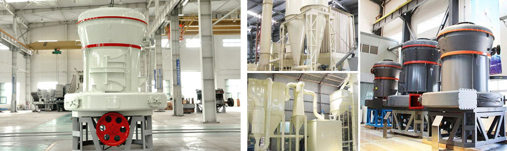

In the grinding mill equipment, the production cost of Raymond mill is the lowest. Stereo structure save production line covers an area of, and similar with the vertical roller mill design principle, Raymond mill from rough machining of raw material to delivery to the milling and final packaging, an independent production system.
1.Hardness
Hardness is one of the properties of material, and it is also the main factor to judge the material production equipment. The hardness of the scale has two kinds, one is the absolute hardness, the other is Mohs hardness. Mohs hardness is divided into ten levels, with ten kinds of minerals common to each other as the standard to distinguish between hard or soft scratch.
2.Mesh
Mesh is refined makings is fineness of science, the goal is general characterization of the sieve aperture size and mesh size is per square inch has many holes. The larger the number of the mesh, showed that the finished material is fine; the smaller the number, the more coarse finished materials.
Raymond Mill on the working principle, structure of continuous improvement achievement now equipment of high efficiency, low energy consumption, covers an area of small, capital investment and environmental pollution-free unique advantages. Mohs hardness below grade seven, humidity below 6% of all non inflammable and explosive minerals, such as gypsum, talc, calcite, limestone, marble, feldspar, barite, dolomite, granite, kaolin, bentonite can be used Raymond mill to closed circuit milling production.
In order to meet the criteria for the use of users in different sectors, Raymond grinding fineness in 613 micron ~440 microns (0.613mm -0.44 mm) between the manual control is realized through the adjustment of parameters of the analysis and the wind machine.
With the continuous development of powder industry, the market for ore superfine Raymond mill application requirements are also rising. Ore superfine Raymond Mill do for main equipments of China powder industry grinding, in order to meet the requirements of different application areas, to develop "high reliability, energy saving, accurate and automatic" is inevitable trend.

Due to the traditional superfine Raymond grinding fineness of raw material is low, power consumption, big noise, system efficiency low problem, has been plagued by mineral processing enterprises and Raymond milling machine equipment manufacturers. Our company after many years of experience accumulation, based on the improvement of existing Raymond grinder based, independent research and development production of a new generation of mineral ultrafine Raymond mill, effective solution to the technical problems of traditional Raymond grinding mill, thus improving the Raymond mill price.
Four major improvements of Raymond mill structure are as follows:
1. the main shaft and the plum frame for the stability of the structure of the transformation, so that it runs smoothly.
2. the analysis of the traditional part of the machine by the cavity drag type, to the cavity of the vertical transmission of the rotating two isolation, thereby enhancing the stability of its work, durability.
3. in the grinding zone, grinding materials to be always gathering in grinding area be processed effectively, improve grinding efficiency, also update and structure of grinding, the grinding roller and grinding roller shaft can be complementary operation, in rotation at the same time also can revolve, the efficacy and durability stronger.
4. in the ventilation part, bellows, and the air duct are from the bottom of the original level changed to slant to the center of the 30 degrees, formed a bucket shaped, to ensure the bellows, wind, always clear of obstructions, and air volume is always maintained in the required, grinding host in a high efficiency.
We will continue to independent development and design of deep ore superfine Raymond mill lead our mill equipment industry think international forward. The Raymond grinding mill is sold at home and abroad, to win the world reputation.
Raymond mill experts based on years of accumulation of powder processing technology, combined with the production line production actual situation, for traditional mill of the Raymond grinding mill mechanism of the innovative transformation in many aspects. Model of Raymond Mill in the production process of non metal powder with calcite, dolomite, talc, kaolin, barite, rutile, fluorite has excellent performance and calcite fineness adjustment to 1250 mesh, the yield can reach 450kg/h, motor power level 23KW, energy consumption low price ratio.